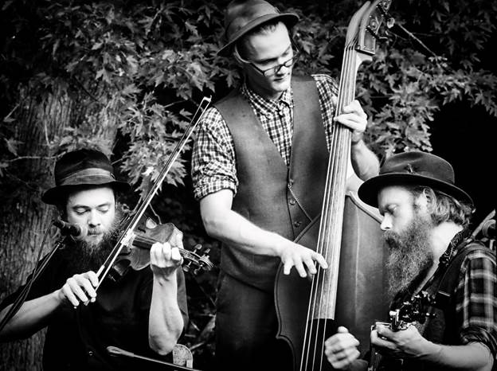
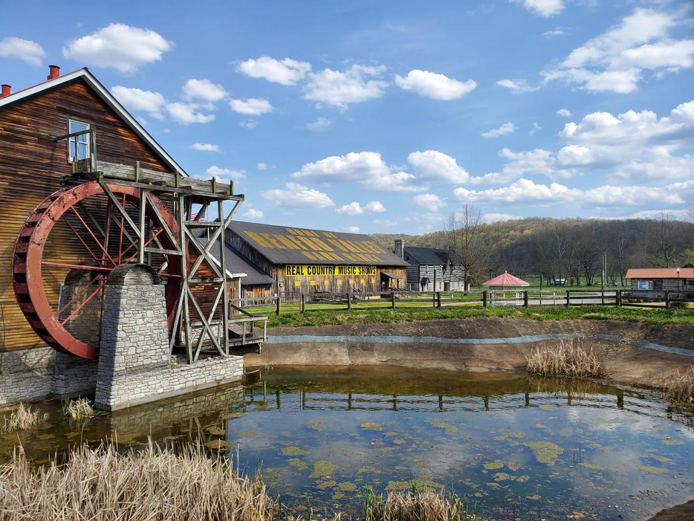

Eastern Kentucky's musical roots run deep. From traditional Appalachian bluegrass to modern folk and country, music here is more than entertainment—it's a way of life.

- Traditional Bluegrass and Folk music in Kentucky
-
Poppy Mountain Music Festival, in Morehead, Kentucky has been celebrating and showcasing mountain music for over 30 years. Local bands and artists from all over Appalachia gather to perform each fall.
The iconic Poppy Mountain barn — a symbol of Eastern Kentucky's bluegrass pride -
Music halls and venues showcasing country and mountain music, like
Renfro Valley Entertainment Center
.

Renfro Valley Entertainment Center — home to real country music shows and Appalachian heritage